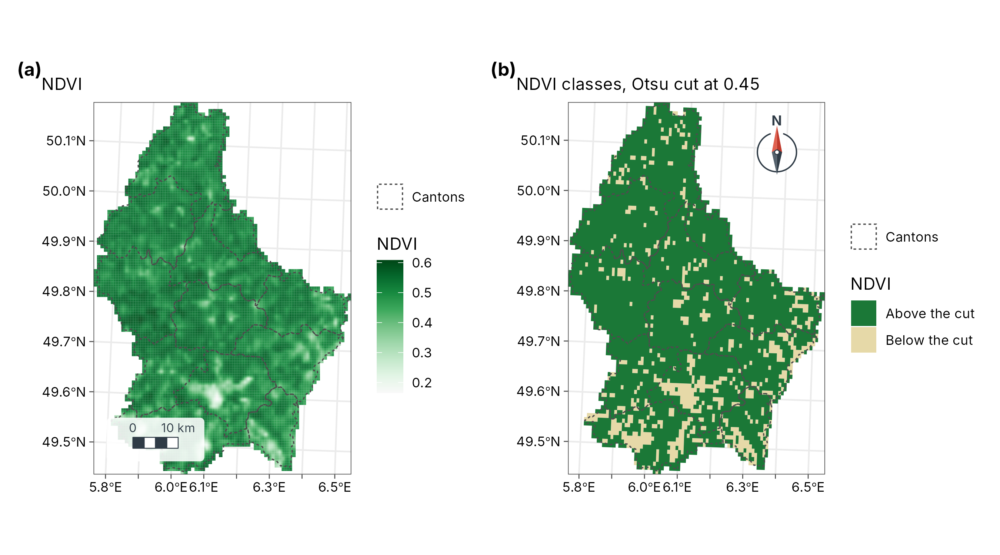
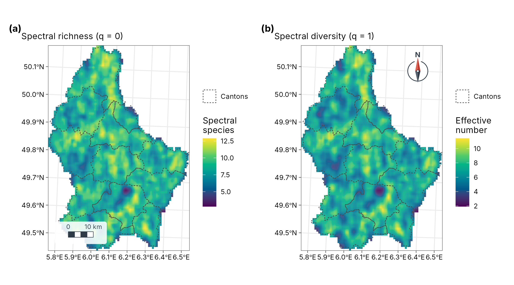
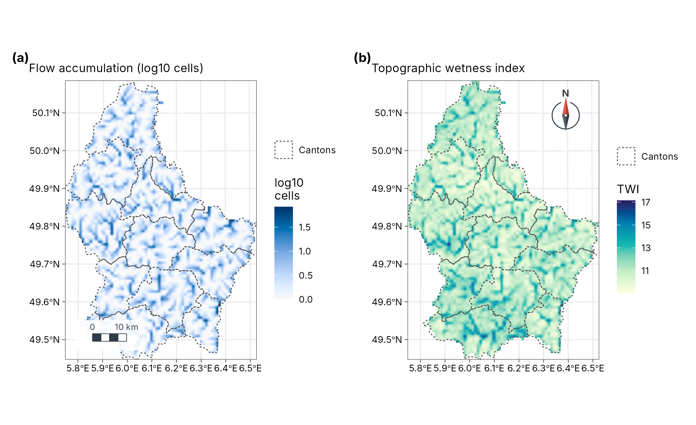
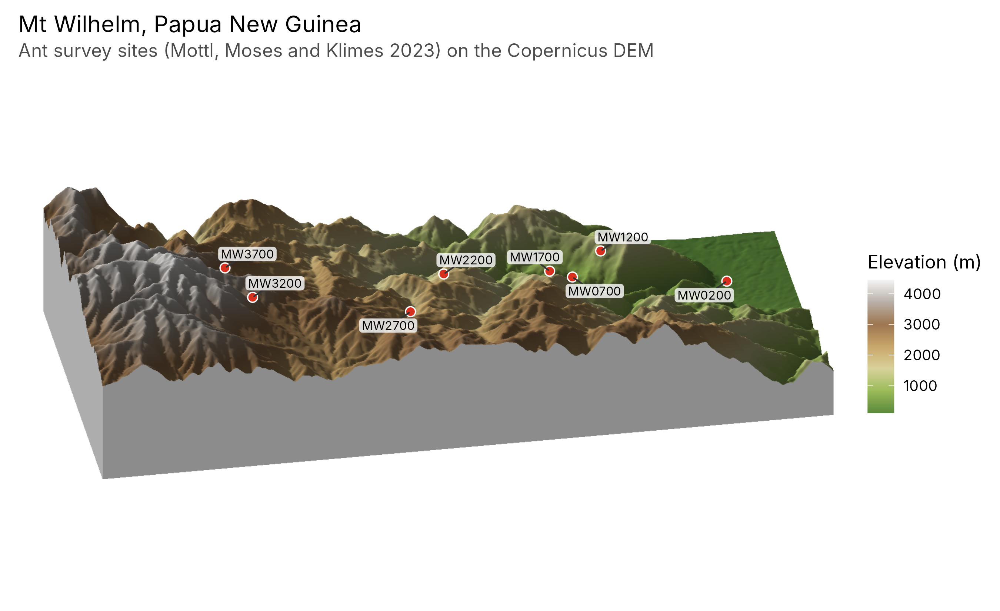

6. Remote sensing and terrain
guide-06-remote-sensing-terrain.Rmd
library(tidymapr)
library(dplyr)
cantons <- sf::st_read(system.file("ex/lux.shp", package = "terra"), quiet = TRUE)Part A. Satellite imagery
The concept
A satellite sensor records how much sunlight each patch of ground reflects in several bands (ranges of wavelength). Surfaces have characteristic spectral signatures. Healthy vegetation absorbs red light for photosynthesis and strongly reflects near-infrared (NIR), which its leaf cell structure scatters; water absorbs NIR; bare soil reflects both moderately. Combining bands as normalised differences turns these contrasts into spectral indices that are comparable between scenes.
The data are a Sentinel-2 Level-2A scene of Luxembourg (24 August 2024, surface reflectance, aggregated to cells of about 0.008°, under 1 km), shipped with terra.
s2 <- terra::rast(system.file("ex/sent2_L2A_2024-08-24.tif", package = "terra"))
names(s2) # B02 blue, B03 green, B04 red, B08 near-infrared
#> [1] "B02" "B03" "B04" "B08"1. Spectral indices
| Index | Formula (Sentinel-2 bands) | Measures | Typical values |
|---|---|---|---|
| NDVI | (B08 − B04) / (B08 + B04) | Green vegetation amount and vigour | < 0.1 water, bare soil; 0.2-0.5 sparse vegetation, crops; > 0.6 dense forest |
| GNDVI | (B08 − B03) / (B08 + B03) | Chlorophyll content | As NDVI, more sensitive in dense canopies |
| NDRE | (B08 − B05) / (B08 + B05) | Chlorophyll, using the red edge | Crop stress |
| NDWI | (B03 − B08) / (B03 + B08) | Open water | > 0 water |
| MNDWI | (B03 − B11) / (B03 + B11) | Open water, less confused by built-up land | > 0 water |
| NDMI | (B08 − B11) / (B08 + B11) | Vegetation water content | Drought stress |
| NBR | (B08 − B12) / (B08 + B12) | Burn severity (compare before and after a fire) | Drop after fire |
| NDBI | (B11 − B08) / (B11 + B08) | Built-up areas | > 0 built-up |
All are bounded between −1 and 1. geo_spectral_index()
recognises the Sentinel-2 bands by name; for other sensors pass
bands.
Automatic thresholds: Otsu’s method
To turn an index into classes (vegetated / not vegetated, water / land), Otsu’s method (Otsu 1979) picks the cut that best separates the histogram into two groups: it maximises the variance between the groups, which is the same as minimising the variance within them. It needs no training data, and works when the histogram has two humps.
ndvi <- geo_spectral_index(s2, "NDVI", threshold = "otsu")
th <- attr(ndvi, "threshold")
th
#> $index
#> [1] "NDVI"
#>
#> $method
#> [1] "Otsu"
#>
#> $cut
#> [1] 0.4495535
#>
#> $area_above_km2
#> [1] 2317.608
#>
#> $share_above
#> [1] 0.8545939
a <- geo_map(subtitle = "NDVI", north_arrow = FALSE) |>
map_raster(ndvi[["NDVI"]], name = "NDVI", palette = "Greens 3") |>
map_polygons(cantons, preset = "admin", label = "Cantons")
classes <- sf::st_as_sf(terra::as.polygons(ndvi[["above"]]))
classes$class <- ifelse(classes$above == 1, "Above the cut", "Below the cut")
b <- geo_map(subtitle = paste0("NDVI classes, Otsu cut at ", round(th$cut, 2)), scale_bar = FALSE) |>
map_polygons(classes, fill = class, group = "NDVI", border = NA,
palette = c("Above the cut" = "#1B7837", "Below the cut" = "#E6D9A8")) |>
map_polygons(cantons, preset = "admin", label = "Cantons")
geo_panels(a, b, ncol = 2, guides = "keep")
Interpretation. The Otsu cut at NDVI = 0.45 puts 85 % of the country (2,318 km²) in the high-vegetation class: forests and grassland, against the lower NDVI of towns, harvested fields and roads. Late August is after the cereal harvest, so arable land appears less green than in June: always state the image date, because NDVI follows the seasons.
2. Spectral diversity
Theory
The spectral variation hypothesis (Palmer et al. 2002) states that places with more varied reflectance tend to hold more species, because different plants have different leaf chemistry and canopy structure. tidymapr follows Féret and Asner (2014):
- Reduce the bands to a few uncorrelated principal components.
- Group pixels into spectral species by k-means clustering.
- In a moving window, count the spectral species and their abundances, and compute Hill numbers: is the number of spectral species, the exponential of Shannon entropy, the inverse Simpson index. These are on the same scale as species diversity from tidydiversity, so the two can be compared directly.
set.seed(1)
sdiv <- geo_spectral_diversity(s2, window = 5, k = 15)
names(sdiv)
#> [1] "q0" "q1" "q2" "spectral_species"
c1 <- geo_map(subtitle = "Spectral richness (q = 0)", north_arrow = FALSE) |>
map_raster(sdiv[[1]], name = "Spectral\nspecies", palette = "viridis") |>
map_polygons(cantons, fill = NA, preset = "admin", label = "Cantons")
c2 <- geo_map(subtitle = "Spectral diversity (q = 1)", scale_bar = FALSE) |>
map_raster(sdiv[[2]], name = "Effective\nnumber", palette = "viridis") |>
map_polygons(cantons, fill = NA, preset = "admin", label = "Cantons")
geo_panels(c1, c2, ncol = 2, guides = "keep")
Interpretation and limits. High values mark mosaics of different surfaces (forest edges, mixed farmland, river valleys); low values mark uniform land (large fields, continuous forest). Spectral diversity is a proxy: at 1 km pixels it measures landscape heterogeneity, not species. It approaches plant diversity only with fine pixels (a few metres, as from airborne or drone sensors) and should be validated with field plots.
Part B. Terrain
The concept
A digital elevation model (DEM) is a raster of ground heights. From it, slope, aspect and the flow of water follow from simple geometry. The data are SRTM-derived elevation of Luxembourg (shipped with terra), projected to metres.
dem <- terra::project(terra::rast(system.file("ex/elev.tif", package = "terra")), "EPSG:2169")
dem
#> class : SpatRaster
#> size : 108, 75, 1 (nrow, ncol, nlyr)
#> resolution : 771.9715, 771.9715 (x, y)
#> extent : 49072.34, 106970.2, 56572.15, 139945.1 (xmin, xmax, ymin, ymax)
#> coord. ref. : LUREF / Luxembourg TM (EPSG:2169)
#> source(s) : memory
#> name : elevation
#> min value : 141.367447
#> max value : 544.0124513. Flow direction and accumulation (D8)
Theory
The D8 algorithm (O’Callaghan and Mark 1984) sends all water from each cell to the one of its eight neighbours with the steepest downhill slope. Flow accumulation then counts, for each cell, how many cells drain through it: its upslope contributing area. Cells with large accumulation form the drainage network; a watershed is everything that drains to a chosen outlet.
| Output | Function | Meaning |
|---|---|---|
| Flow direction | geo_flow_direction() |
Direction of steepest descent, coded 1 (E), 2 (SE), 4 (S) … 128 (NE) |
| Flow accumulation | geo_flow_accumulation() |
Number of upslope cells draining through each cell |
| Watershed | geo_watershed() |
Cells draining to an outlet |
| Topographic wetness index | geo_twi() |
Tendency to be wet (below) |
4. Topographic wetness index (TWI)
where is the upslope contributing area per unit contour width and the local slope (Beven and Kirkby 1979). Large contributing areas and gentle slopes give high TWI: valley floors where water collects and soils stay wet. Small areas and steep slopes give low TWI: ridges and steep sides that drain fast. TWI is widely used as a predictor of soil moisture, wetland vegetation and species distributions.
acc <- geo_flow_accumulation(dem)
twi <- geo_twi(dem)
h1 <- geo_map(subtitle = "Flow accumulation (log10 cells)", north_arrow = FALSE) |>
map_raster(log10(acc), name = "log10\ncells", palette = "Blues 3") |>
map_polygons(cantons, preset = "admin", label = "Cantons")
h2 <- geo_map(subtitle = "Topographic wetness index", scale_bar = FALSE) |>
map_raster(twi, name = "TWI", palette = "YlGnBu") |>
map_polygons(cantons, preset = "admin", label = "Cantons")
geo_panels(h1, h2, ncol = 2, guides = "keep")
Interpretation. Dark lines in the accumulation map trace the river network: the main valleys collect water from many upslope cells (at this coarse resolution, up to 124). The wetness index highlights the same valley floors and broad, flat areas, which are likely to have wetter soils; ridges and steep valley sides have low values and drain fast.
Limits. A DEM with cells under 1 km still smooths small valleys away, and D8 sends water in one direction only, so it draws single-cell channels on flat land. Use a finer DEM (25 m or better) for catchment studies, and check the network against mapped streams.
5. 3D terrain
geo_map3d() renders a DEM as a block diagram with sun
lighting and cast shadows, in C++, and returns an ordinary ggplot. It is
for communication: showing relief and where sites lie
on it. It is not for measuring: perspective distorts distances and
areas.
wilhelm <- terra::rast(system.file("extdata", "wilhelm-dem.tif", package = "tidymapr"))
sites <- png_ants_sites[!duplicated(png_ants_sites$site), ] |>
sf::st_as_sf(coords = c("lon", "lat"), crs = 4326)
geo_map3d(wilhelm, theta = 190, phi = 30, points = sites, label = "site",
title = "Mt Wilhelm, Papua New Guinea",
subtitle = "Ant survey sites (Mottl, Moses and Klimes 2023) on the Copernicus DEM",
width = 1600, height = 1000)
References
Beven, K. J. and Kirkby, M. J. (1979). A physically based, variable contributing area model of basin hydrology. Hydrological Sciences Bulletin, 24, 43-69.
Féret, J.-B. and Asner, G. P. (2014). Mapping tropical forest canopy diversity using high-fidelity imaging spectroscopy. Ecological Applications, 24, 1289-1296.
O’Callaghan, J. F. and Mark, D. M. (1984). The extraction of drainage networks from digital elevation data. Computer Vision, Graphics, and Image Processing, 28, 323-344.
Otsu, N. (1979). A threshold selection method from gray-level histograms. IEEE Transactions on Systems, Man, and Cybernetics, 9, 62-66.
Palmer, M. W. et al. (2002). Quantitative tools for perfecting species lists. Environmetrics, 13, 121-137.
Rouse, J. W. et al. (1974). Monitoring vegetation systems in the Great Plains with ERTS. NASA Special Publication, 351, 309-317.
Tucker, C. J. (1979). Red and photographic infrared linear combinations for monitoring vegetation. Remote Sensing of Environment, 8, 127-150.